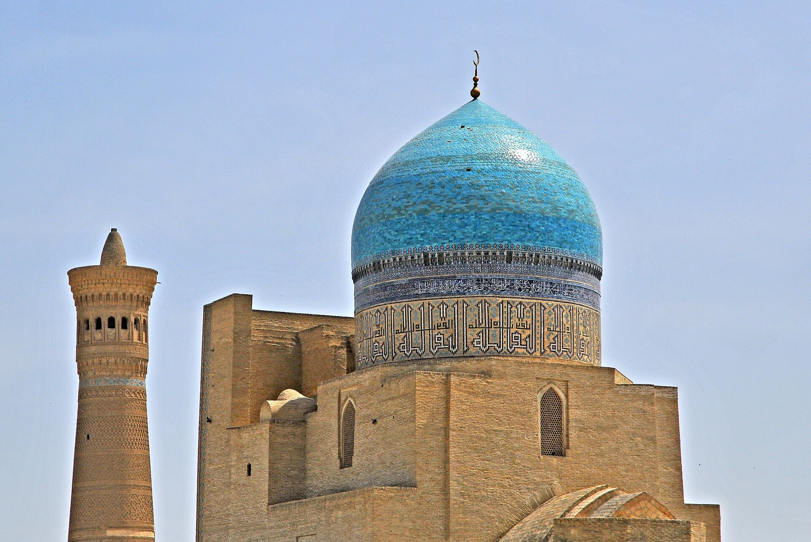

Как распределяется наследство в исламском праве: основы фараид
Наследство (мирас) — точно определённый раздел исламского права, наука фараид. Какие четыре вещи и в каком порядке берутся из имущества, каковы фиксированные доли (1/2, 1/4, 1/8, 2/3, 1/3, 1/6), почему сын получает вдвое больше дочери, и доли мужа, жены, родителей и детей. Основанное на фактах руководство со ссылками, по Корану (сура Ан-Ниса) и четырём мазхабам.

Наследство (араб. мирас) — распределение имущества умершего между его близкими. В исламе это не оставлено на волю случая: кому сколько причитается, в основном закреплено в Коране, а сама область называется наукой фараид (ильм аль-фараид — «наука об установленных долях»). Ниже изложены источники наследования, обязательства, предшествующие распределению, фиксированные доли, доли сыновей и дочерей, супругов и родителей, а также практическая сторона в Узбекистане — на основе авторитетных религиозных и справочных источников, с фактами.
Источники: Коран, Сунна и консенсус
Главный источник наследования — три аята Корана: сура Ан-Ниса, аяты 11 и 12, и аят 176. Они задают доли точными дробями. Эти аяты дополняются Сунной Пророка (мир ему) и консенсусом (иджма) учёных. Это делает распределение наследства одним из самых подробных и математически проработанных разделов исламского права.
Перед распределением: порядок четырёх обязательств
Прежде чем имущество делится между наследниками, из имущества умершего берётся в таком порядке: (1) расходы на похороны и саван; (2) долги умершего (людям и, по некоторым мнениям, перед Богом — например невыплаченный закят); (3) завещание (васийя), если оно сделано, — но только в пределах одной трети (1/3) имущества и в пользу того, кто не является наследником; (4) после этого оставшееся имущество распределяется между наследниками по фиксированным долям.
Фиксированные доли (доли фард)
Коран задаёт шесть точных дробей: 1/2, 1/4, 1/8, 2/3, 1/3 и 1/6. Определённые наследники (например муж, жена, отец, мать и дочери) получают эти фиксированные доли; то, что остаётся после долевых наследников, переходит к «асаба» — остаточным наследникам (обычно мужская линия: сын, отец, братья и т. д.). Эти доли предписаны свыше и не меняются по произволу.
Доли сына и дочери: соотношение 2:1
Согласно суре Ан-Ниса, аят 11, среди детей сын получает вдвое больше дочери (2:1). Учёные объясняют это финансовыми обязанностями мужчины в исламе: мужчина платит махр при вступлении в брак и обязан содержать жену, детей и нуждающихся родственников, тогда как имущество женщины остаётся только её, и она не обязана его тратить. Иными словами, бо́льшая доля идёт вместе с бо́льшей обязанностью.
Доли дочерей (когда нет сына)
Если у умершего нет сына: одна дочь получает половину (1/2) имущества; две или более дочери вместе поровну делят две трети (2/3). Если есть сын, дочери получают остаток вместе с ним в соотношении 2:1.
Доли мужа и жены
Сура Ан-Ниса, аят 12: муж получает половину (1/2) имущества жены, если у неё не осталось ребёнка, и четверть (1/4), если ребёнок есть. Жена получает четверть (1/4), если у мужа не осталось ребёнка, и восьмую часть (1/8), если ребёнок есть. При наличии нескольких жён они делят эту долю поровну между собой.
Доли родителей
Если у умершего есть ребёнок, отец и мать получают каждый по одной шестой (1/6) имущества. Если ребёнка нет и родители — основные наследники, мать получает одну треть (1/3), а отец — остальное (как остаточный наследник). Дедушка и бабушка в определённых случаях могут занять место отсутствующих отца или матери.
Место завещания и дара
Наследнику, у которого уже есть фиксированная доля, завещание не делается — известный хадис гласит: «нет завещания наследнику». Завещание можно сделать только в пределах одной трети имущества и только тем, кто не наследует (например осиротевшему внуку, на благотворительность, другу). Настоящий дар (хиба), сделанный при жизни, не является наследством — он не входит в лимит завещания, поскольку это имущество уже вышло из рук владельца.
В Узбекистане: закон и практика
В Узбекистане официальные вопросы наследования решаются по светскому Гражданскому кодексу — через нотариусов и суды; по закону наследники-мужчины и женщины равноправны. Многие семьи также хотят следовать правилам фараид при распределении имущества в морально-религиозном смысле. В сложных случаях, где две системы расходятся (например расчёт долей или наследники разных категорий), рекомендуется обратиться к квалифицированному юристу и знающему учёному.
Примечание
Эта статья излагает общие религиозно-правовые факты о наследстве и не заменяет личную фетву или юридическую консультацию. Конкретные случаи (например множество наследников одновременно, расчёты «авль» и «радд», различия между мазхабами) требуют отдельного рассмотрения. Источники: Quran.com (сура Ан-Ниса 4:11, 4:12, 4:176 и их тафсир), Islamic inheritance jurisprudence (энциклопедический обзор), Al-Islam.org, FaraidHub и Гражданский кодекс Узбекистана (раздел о наследовании).
Источники
- Quran.com — Niso surasi 4:11 (farzandlar, ota-ona ulushlari) va tafsiri
- Quran.com — Niso surasi 4:12 (er-xotin ulushlari) va 4:176 (kalola)
- Islamic inheritance jurisprudence — belgilangan ulushlar (1/2, 1/4, 1/8, 2/3, 1/3, 1/6), asaba, to‘rt mazhab
- FaraidHub — Surah An-Nisa inheritance verses 4:11, 4:12 & 4:176 tushuntirildi
- Al-Islam.org — Inheritance (Al-Mizan tafsiri, 4:11–14)